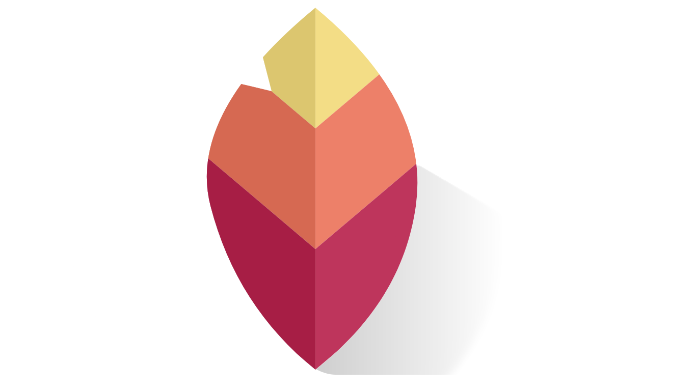

3 takeaways:
- Lossless is a filter that compresses the data from an image, it doesn't lose the quality but it has to be uncompressed through a software like photoshop before using it again.
- Using image optimization plugins are very helpful for wordpress websites. This can help reduce the stress off the web server since you don’t have to reload it everytime.
- A gif only uses 256 colors, and supporters animated images.
>
